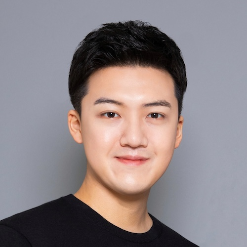

Assistant Professor, Department of Physics, Sogang University, Seoul, Korea
Sep 2024 - present
Postdoctoral Researcher, Department of Physics, University of California, Berkeley
Jun 2021 - Aug 2024 (Advisor: Prof. Marvin L. Cohen)
Postdoctoral Researcher, Department of Physics, Yonsei University, Seoul, Korea
Mar 2021 - May 2021 (Advisor: Prof. Hyoung Joon Choi)
Ph.D. in Physics, Department of Physics, Yonsei University, Seoul, Korea
Mar 2016 - Feb 2021 (Advisor: Prof. Hyoung Joon Choi)
B.S. in Physics, Department of Physics, Yonsei University, Seoul, Korea
Mar 2010 - Feb 2016 (Mandatory military service from Oct 2012 to Jul 2014)
Jae Ha Kim (김재하) / Postdoc / kimha@sogang.ac.kr
Byeongchan Lee (이병찬) / Ph.D. Student / claude@sogang.ac.kr
Seungwoo Shin (신승우) / M.S. Student / twinace98@me.com
Seongbin Park (박성빈) / M.S. Student / jmn951@naver.com
Dongsin Kim (김동신) / Undergraduate / kissday818@sogang.ac.kr
Minchul Choi (최민철) / Visiting Ph.D. Student / honest0721@soongsil.ac.kr
Seunghee Lee (이승희) / Undergraduate
Dongho Shin (신동호) / Undergraduate